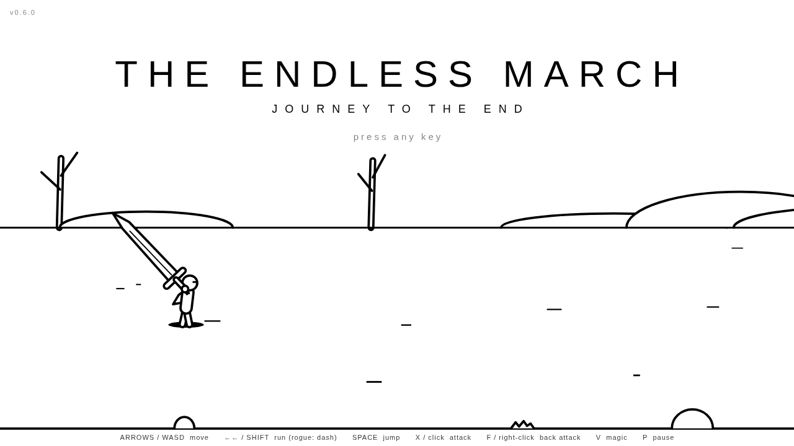

The Endless March
Journey to the end

A black-and-white belt-scroller in the spirit of Golden Axe, without the mounts. An outlined figure walks a long white road and fights ten waves along the way. After the tenth, a monolith rises at the end of the road and its door opens onto blinding white light. What that light means is up to you.
Current version: 0.6.0. Every version, its changelog and its demo.
Watch it
What it is
The road
One long road across a plain, through ruins and a fortress, into the void. The screen locks for each wave. Clear it, and GO → sends you on.
Lanes
You walk into and out of the screen as well as left and right. You only hit what shares your lane, and you dodge by leaving one.
Three paths
The Warrior and an enormous sword, the Archer and a quiver of fire arrows, the Rogue with twin daggers and an untouchable dash.
Ten waves
Nine enemy types with readable windups, each asking something different of you. Then an Elite. Then the door.
Magic & thieves
Little thieves carry pots in their sacks. Knock them loose. Casting spends every pot you carry, all at once.
Ink and paper
Everything is a white shape with a black outline. Only two colours, except at night, when they swap.
Get it
Windows
Download The-Endless-March-0.6.0-Windows.zip, unzip it and run The Endless March.exe. Nothing to install. The game opens in its own window. It isn't code-signed, so if SmartScreen warns you, choose More info → Run anyway.
Android
Download The-Endless-March-0.6.0-Android.apk on an Android 7.0+ device and open it; allow installs from your browser when asked. Full screen, landscape, plays offline. Back pauses.
iPhone & iPad
Open the game in Safari, tap Share → Add to Home Screen. It launches full screen from your home screen and plays offline. A native iOS project is in the source (mobile/ios/) for building on a Mac with Xcode.
Browser
Play right here, or download a single HTML file with the whole game in it. Keyboard, mouse, gamepad or touch.
Read more
Guide →
Controls, the lane rule, every class and move, every enemy, the waves, magic, nights and lives.
Art →
The outline style and its rules, the scenery, the figures, and the concept art.
Story mode →
What is planned: chapters along the road, three reasons to march, and a door that stays unexplained.
Versions →
From 0.1.0 to 0.6.0: changelogs, downloads, and a playable and recorded demo of each.